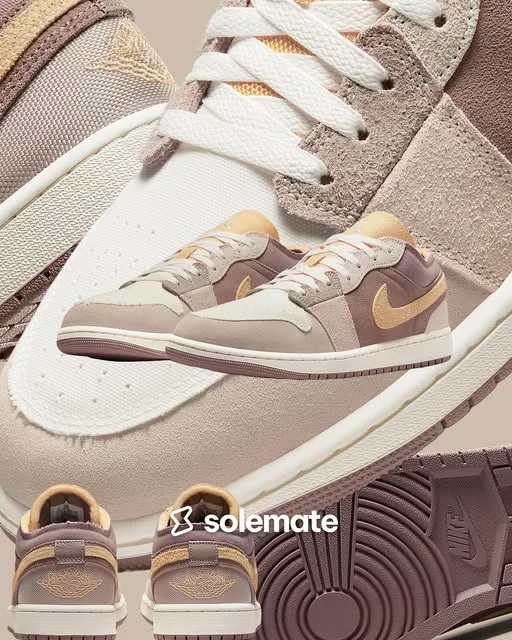
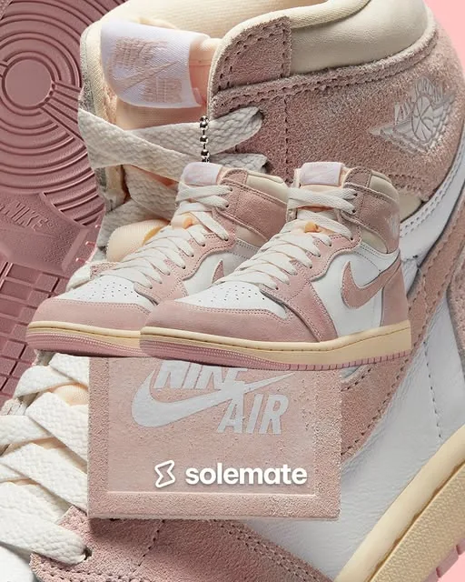
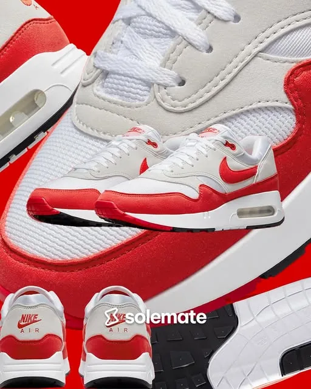
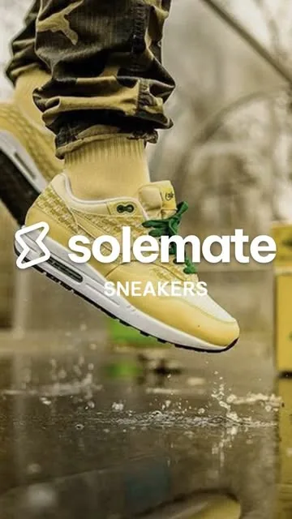

Case study · Marketing & Strategy
Solemate
A sneaker store, an app and a community, built from zero.

Meet the founders
- Vuyo PakadeCo-founder
- Joshua DunnCo-founder · Head of Marketing & Community
- Olebogeng RadiseCo-founder · Digital Resolve, tech partner
- PoloCo-founder · Digital Resolve, tech partner
Four founders, one pop-up and a sneaker app, backed by The Sneaker Shack.
01The gap
Buying the sneaker you actually want in South Africa meant long waits, awkward payments and no way to know if the pair was real.
Solemate set out to fix that: one place to buy, sell and consign authentic sneakers, with nationwide delivery. Resellers got a new audience and a smooth checkout. Sneaker lovers got the pairs they were hunting for, and a pop-up gallery in Rosebank where they could see them in person.
02How it unfolded
- 2021Four co-founders start building Solemate, with Digital Resolve as tech partner and shareholder.
- Oct 2022The Sneaker Shack invests R500K. A few weeks later the pop-up store opens at 33 Baker Street, Rosebank.
- Nov 2022The Solemate app goes live, one of the first sneaker resale stores in South Africa with its own app.
- Feb 2023A R1,000 Meta ad on an Air Force 1 listing brings in about R10,000 in two weeks.
- Mar 2023We close the pop-up and move fully online.
- 2023Funding runs out and operations stop.
03What I owned
- The launchBuilt and designed the store in one week, and planned the launch party with an agency: the influencer list, invitations and event emails. Yomzansi and people across the sneaker industry covered it.
- Instagram, from zeroGrew the page from 0 to 1,600 followers in four months. Our lookbook Reels averaged about 3.4K views.
- The content calendarPlanned what went out on Instagram, TikTok and Facebook, and set the look of every post.
- Weekly release emailsNew drops sent through Shopify every week, lifting the site to about 50 visitors a day.
- Paid socialOne R1,000 Meta ad for an Air Force 1 listing returned about R10,000 in sales, plus enquiries about the pair in store.
- CommunityA Valentine's giveaway with about 350 entries, and Pre-Loved, a used-sneaker category that signed up about 200 pairs.
- Partnerships & logisticsWorked with our delivery partners, helped make Solemate the first sneaker store on Uber Eats, and announced a collaboration with Stub Africa.
04Three posts a week. One look.
Consistency builds trust, so the feed ran on a system. I set the visual direction, the post ideas and the calendar, and our designers built each post in Adobe. Every Monday, Wednesday and Friday, Solemate showed up looking like one brand.
- Release dropsA zoomed-in shoe backdrop, the product, and a "SOLEMATE RELEASE" caption telling the shoe's story.
- Lookbook ReelsOn-foot styling clips.
- PromosOffers like 10% off a first order with SOLEMATEFIRST.
- Pre-LovedUsed pairs on consignment.
- CommunityMeet-the-founders posts and giveaways.






05The numbers
- R500Kraised from The Sneaker Shack
- R350K+in sales, Oct 2022 to Mar 2023
- +25%revenue growth
- 0 → 1,600Instagram followers in four months
- 10×return on a R1,000 Meta ad
- ~350entries in the Valentine's giveaway
06What it taught me
The pop-up made the sales. The screen didn't. When we went fully online in March 2023, sales stopped, and by the end of 2023 the funding had too. Now I never switch off a channel that's working until the new one has proven itself, and I keep a real-world touchpoint while a brand grows online.